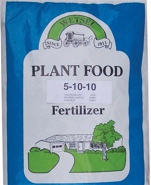

Potatoes
Market Price: ₹10 - ₹25 per kg
Rainy
Soil: Sandy loam soil with good drainage

Complete Potato Fertilizer (5-10-10)
Rs 1300 per Bag
Use for foliage growth and overall plant vigor, crucial during the early stages
Content:
1. Nitrogen (N): 5%
2. Phosphorus (P): 10%
3. Potassium (K): 10%
Fertilizer
Potassium Sulfate
Rs 1750 per Bag
Use for in root development, sugar synthesis, and overall plant health
Content:
1. Nitrogen (N): 0%
2. Phosphorus (P): 0%
3. Potassium (K): 50%
Fertilizer